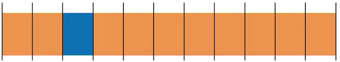

To Do Today:
Why Sprites?
It enables you to break up an animation into steps rather than the usual tweened motion that we’re used to.

Which principle of animation does this remind you of?
Straight Ahead &
Pose to Pose
Starts at the first drawing and works drawing to drawing to the end of the scene / Charted with key drawings at intervals throughout the scene.
Straight ahead animation starts at the first drawing and works drawing to drawing to the end of a scene. You can lose size, volume, and proportions with this method, but it does have spontaneity and freshness. Fast, wild action scenes are done this way.
Pose to Pose is more planned out and charted with key drawings done at intervals throughout the scene. Size, volumes, and proportions are controlled better this way, as is the action.
Sprite animations are best for small, animated embellishments in web interfaces... Typically, these animations will be created first in animation software like After Effects or even drawn frame-by-frame in something like Illustrator
Val Head.
CSS: Animation with Val Head
Timing Function Values
- linear
- ease-in
- ease-out
- ease-in-out
- steps
- cubic-bezier
Steps divide the animation duration into equal parts
steps(x)
steps(x) is a timing function that splits a block of keyframes into x equal steps, then hops between them.
Easing comparison - linear vs steps
#green {
transition: transform 3s linear;
}
#blue {
transition: transform 3s steps(3);
}
#green:active, #blue:active {
transform: translateX(300px);
}
start vs end
#green {
transition: 3s steps(3, start);
}
#blue {
transition: 3s steps(3, end);
}
#green:active, #blue:active {
transform: translateX(300px);
}
More steps() examples
Try changing: color
#green {
background-color: green;
transition: background-color 3s steps(3);
}
#green:hover {
background-color: yellow;
}
{kind=link}
More steps() examples
Try changing: background-position
#blue {
transition: background-position 3s steps(3);
background: url('graphics.png') 0px 0px;
}
#blue:hover {
background-position: 0px -300px;
}
twitter like animation
Image file that twitter uses for Like button
{kind=link}
#green { ...
background: url('twitter_like.png');
background-position: 0px 0px;
}
Using steps() to move background-position
Image file that twitter uses for Like button
#green {
background: url('like.png') 0px 0px;
transition: 1s steps(28);
}
#green:active {
background-position: -2800px 0px;
}
{kind=link}
Mismatched frames vs steps
Image file that twitter uses for Like button
#green {
background: url('like.png') 0px 0px;
transition: 1s steps(29);
}
#green:active {
background-position: -2800px 0px;
}
See the Pen twitter sprite by A.V. ( @avcoder) on CodePen.
Implement Twitter's Like animation
Using the steps() function, animate the given sprite.
{kind=link}
#green {
background: url('like.png') 0px 0px;
transition: 1s steps(28);
}
#green:active {
background-position: -2800px 0px;
}
Exporting images as sprites
-
Export sprite
Adobe Illustrator and similar programs have an export frames to images function
-
Use high quality images
Use good/high quality setting for your images, but beware of file size
-
Don't export progressive .jpgs
If you do export as a .jpg, don't use progressive setting
-
Smooth animation vs file size
More images give smoother animation but also larger file size
Summary:
Do in-class Exercise 10
until end of class
* * *
More Stuff
References
- https://www.smashingmagazine.com/2014/04/understanding-css-timing-functions/#introducing-the-steps-timing-function
- lynda.com - CSS animation with Val Head
- lynda.com - Motion Design with CSS with Rachel Nabors
- https://medium.com/@chrismabry/how-did-they-do-that-the-twitter-like-animation-2a473b658e43